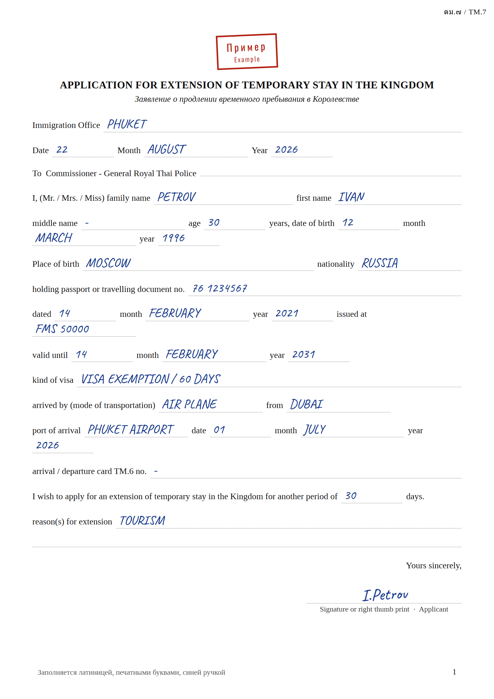
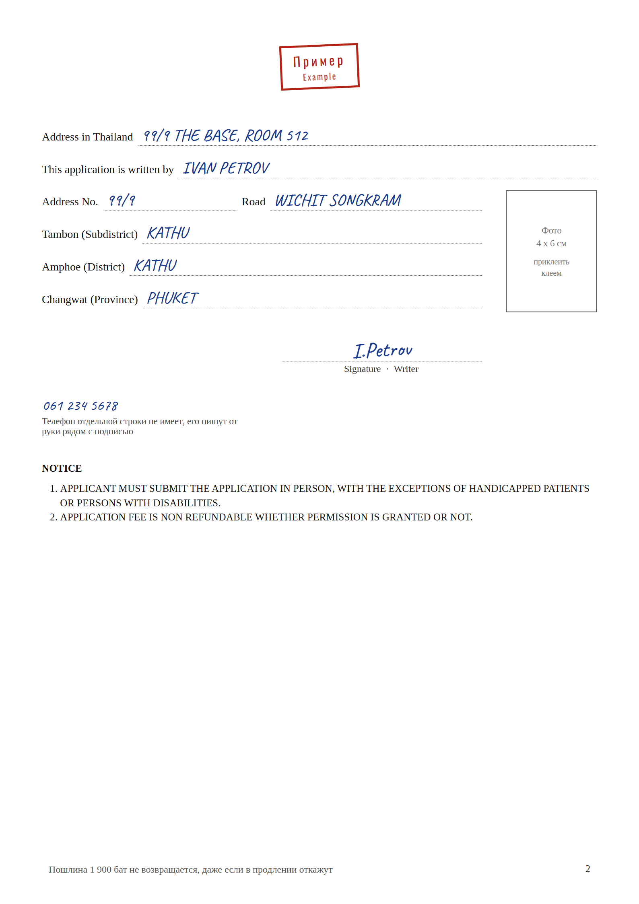
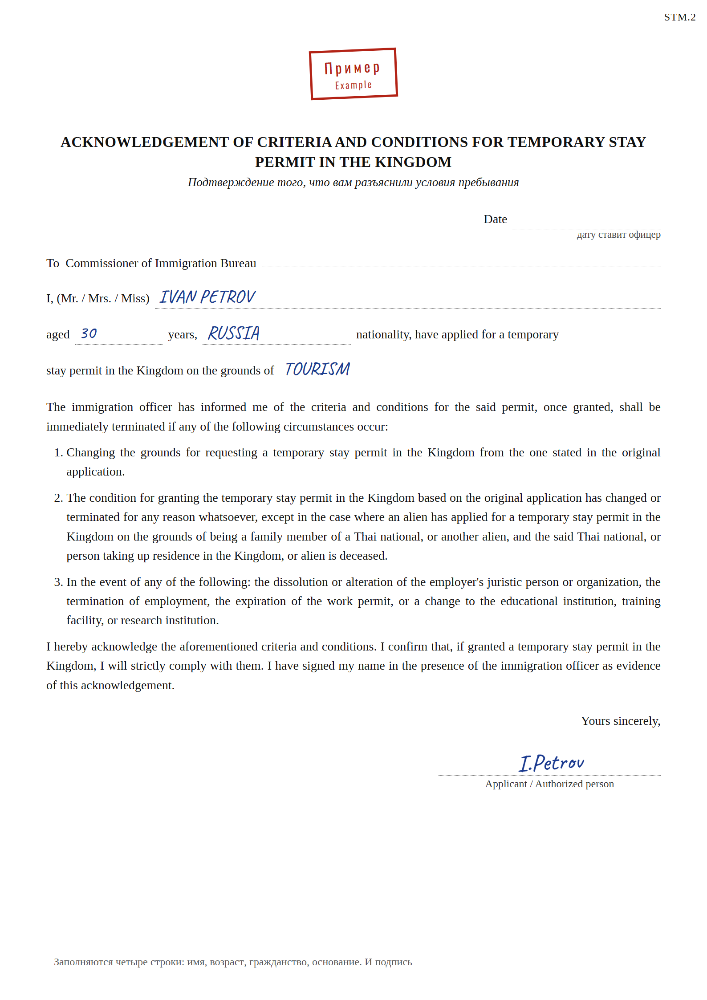
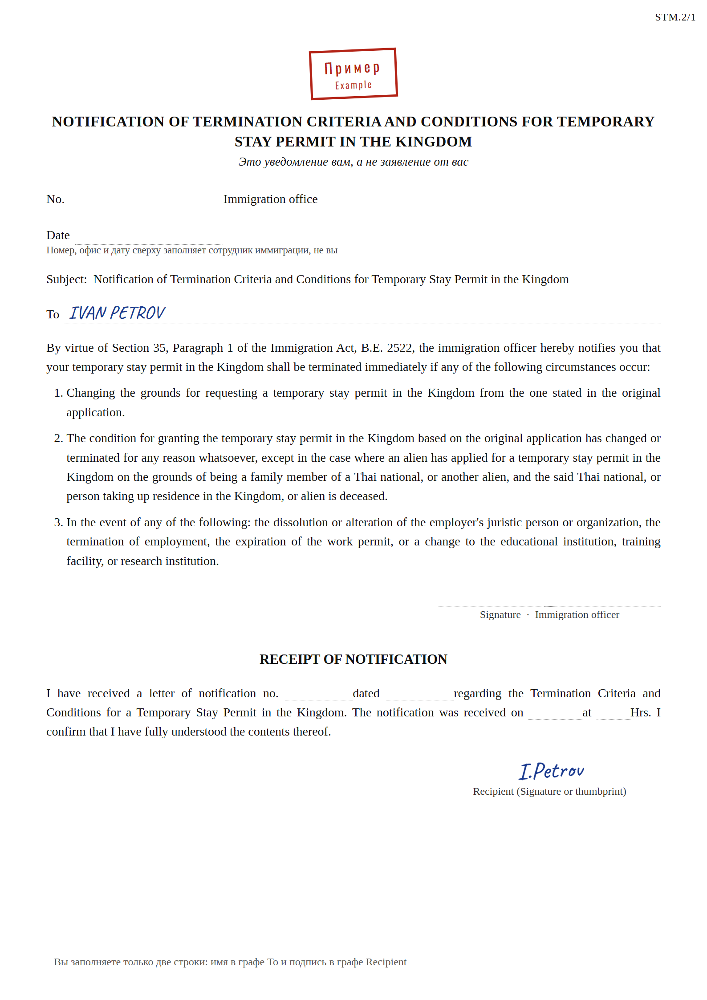
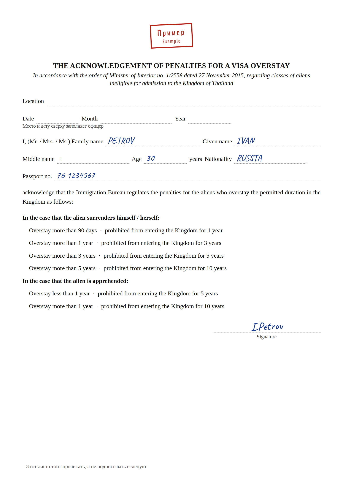
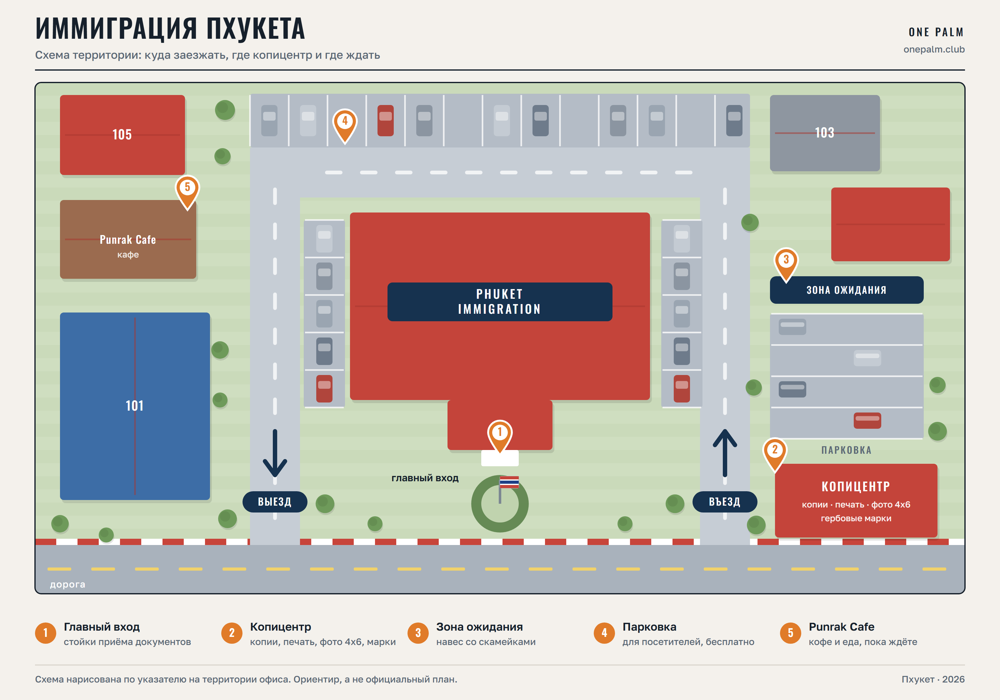

Вводные
Пошлина 1 900 ฿ наличнымиНе возвращается даже при отказе. Дают ровно плюс 30 дней к текущему штампу.
Закладывайте полдня и приезжайте с утраТалоны заканчиваются. Ехать лучше за неделю до конца штампа, а не в последний день.
Заполнить надо 4 бланкаПлюс дадут лист про овестей. Все примеры заполнения ниже.
Что взять с собой
Паспорт и копииКопия страницы с фото и копия штампа о въезде. Каждую копию подписать от руки, без подписи не примут.
Фото 4х6 смСвежее, клеится в рамку на втором листе. Клеем, не степлером.
1 900 ฿ и своя ручкаКопии и фото делают прямо на территории офиса, в домике с надписью PHOTO COPY справа от въезда.
Закрытая одеждаПлечи и колени закрыты. В майке и шортах могут развернуть.
Бланки: как заполнять

Бланк 1 · TM.7, лист 1Главный бланк, всё латиницей печатными буквами. Имя и фамилия строго как в загранпаспорте, буква в букву, в middle name прочерк. Месяцы пишите словом, а не цифрой: у нас и у тайцев разный порядок дня и месяца. В Kind of visa перепишите то, что стоит в вашем штампе: въехали без визы, пишете VISA EXEMPTION и число дней. Дату и место въезда берите из штампа, а не из памяти. Arrival card TM.6 no: бумажных карточек давно нет, ставьте прочерк и спросите офицера, выдумывать номер нельзя. В Reason for extension пишется TOURISM, и всё, не пишите про работу, даже удалённую.

Бланк 2 · TM.7, лист 2Адрес, где вы реально живёте, берите из договора аренды, там он написан правильно. Три строки адреса это тайская матрёшка: подрайон (tambon), район (amphoe), провинция (changwat). Телефон отдельной строки не имеет, его пишут сбоку от подписи.

Бланк 3 · STM.2Имя, возраст, гражданство, основание TOURISM и подпись внизу справа. Смысл бланка: вам объяснили условия пребывания, и разрешение аннулируется, если основание изменится. Дату и номер сверху не трогайте, это поля офицера.

Бланк 4 · STM.2/1Тут заполняются две строки: имя сверху и подпись в строке Recipient внизу. Это уведомление вам, а не заявление от вас. Номер, дату, время и подпись офицера слева оставляйте пустыми.

Лист про овестейИмя, возраст, гражданство, номер паспорта, подпись. Прочитайте его, а не подписывайте вслепую: там перечислено, на сколько закрывают въезд за просрочку, вплоть до 10 лет.
Где находится иммиграция

На чём заворачивают чаще всего
Приехали в последний день штампа
Написали имя не как в паспорте
Копии без подписи
Написали в причине про работу
Заполнили служебные поля офицера
Ушли, не посмотрев на новый штамп: проверяйте дату сразу у стойки
Продление это не ваше право, а решение офицера. Правильно собранный
пакет и спокойное общение сильно повышают шансы, но гарантий не даёт никто. Правила меняются,
иногда молча, поэтому перед поездкой в офис перепроверьте актуальное.
Эти 30 дней тоже закончатся
Дальше вопрос другой: бордерран или нормальная виза под вашу задачу. Думать об этом лучше заранее, а не за три дня до штампа. Напишу, что подходит именно вам, и передам проверенному человеку, который делает визы.
Разобраться с визой